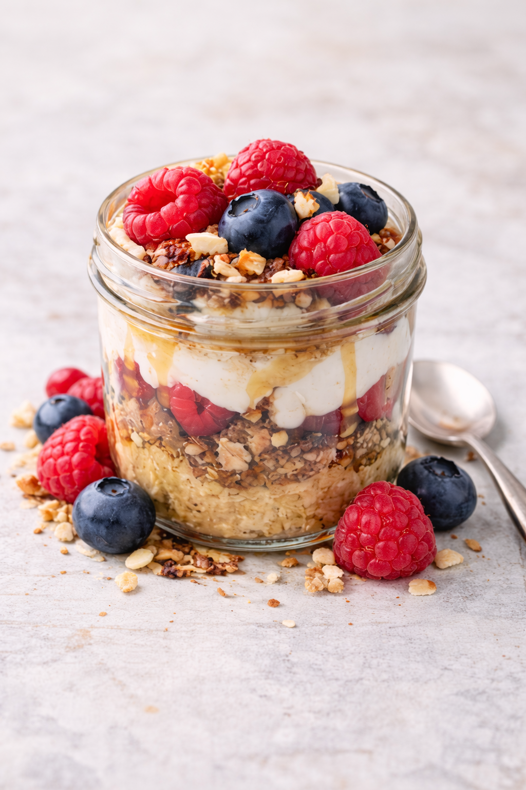
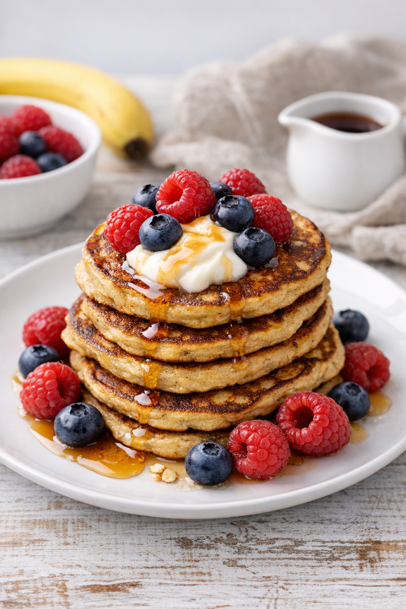
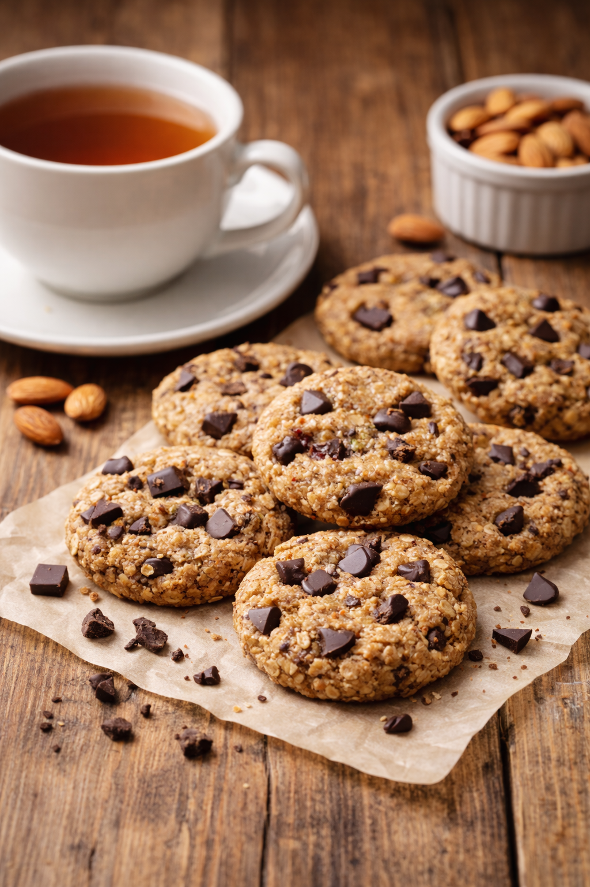
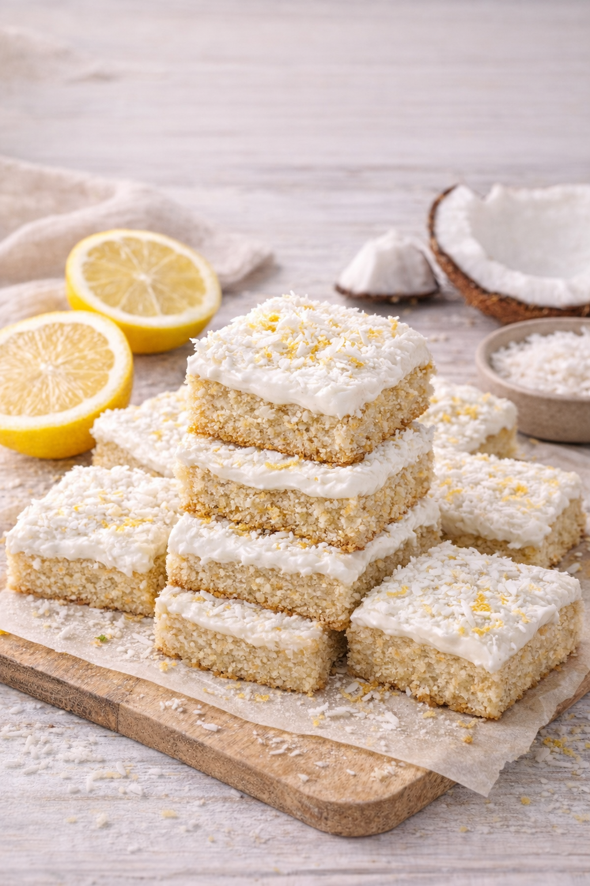
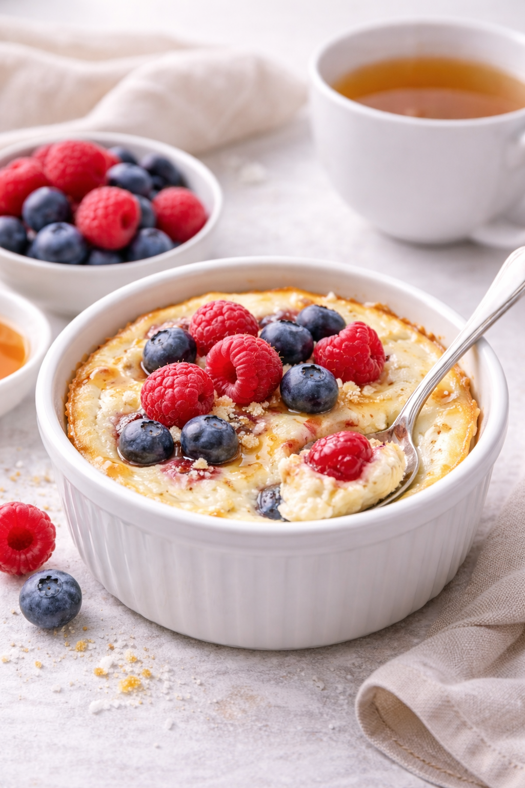
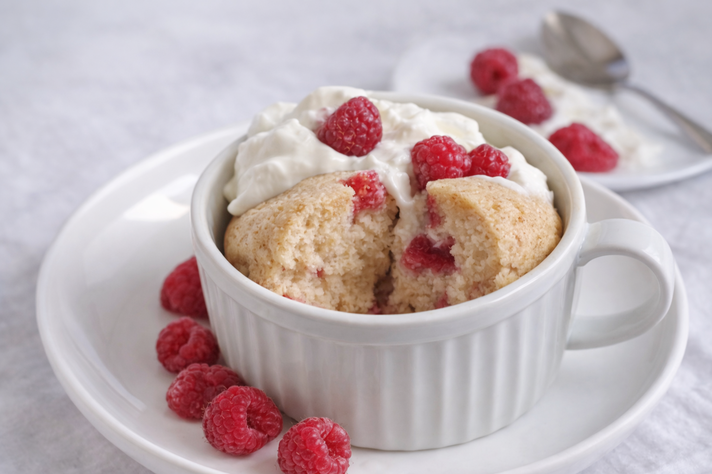
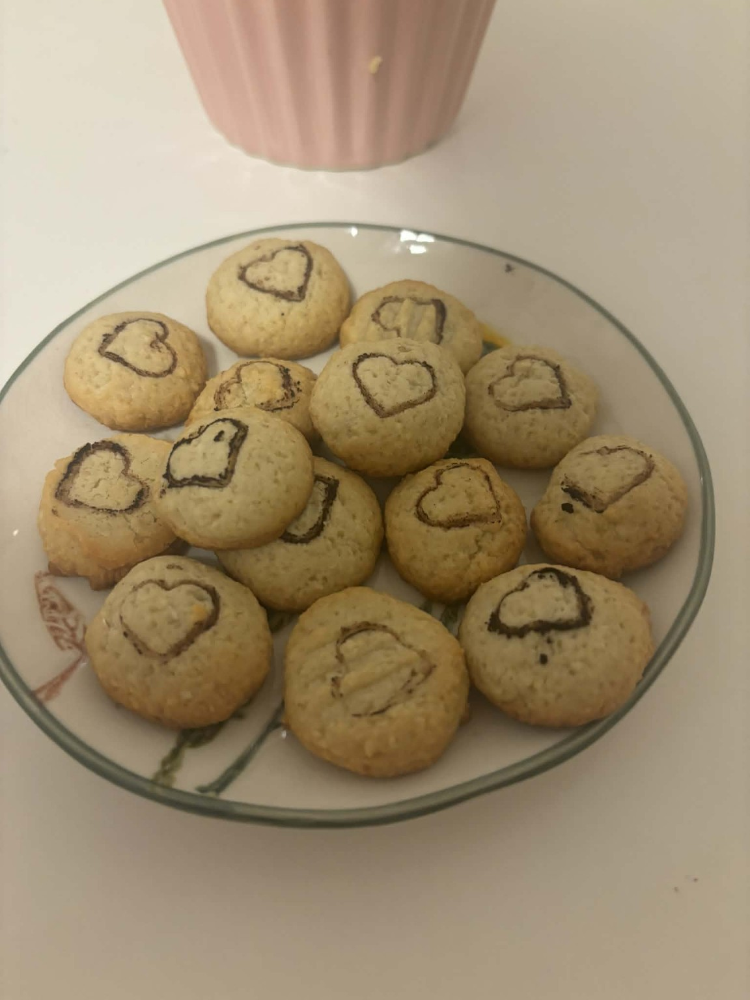
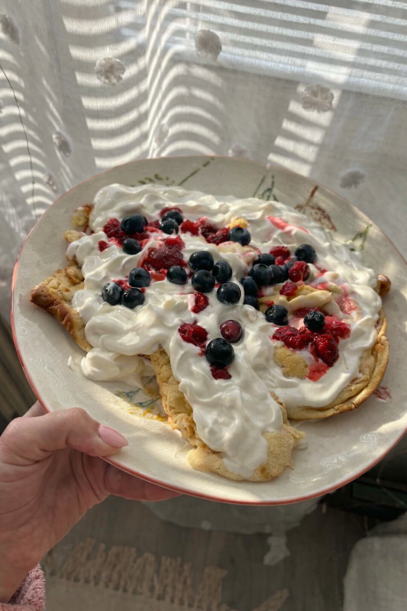
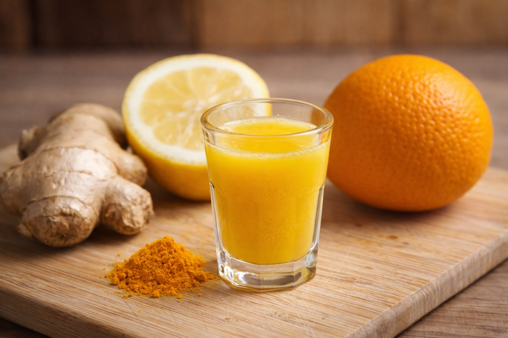
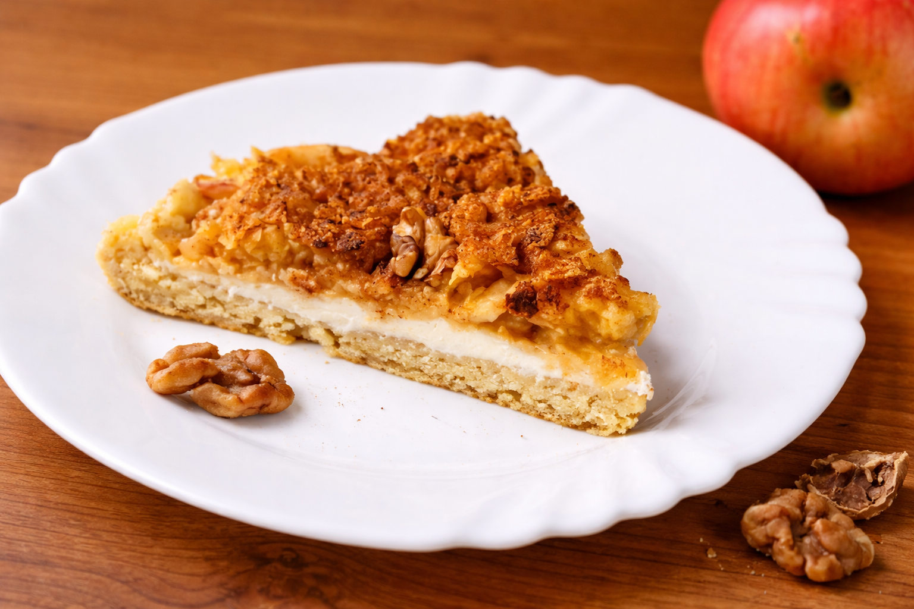

Malinovo‑jogurtové pohárky s kakaem
maliny
jogurt
oves
javorový sirup
Vrstvy řeckého jogurtu, malin, vloček a kakaa. Jemné, syté a hotové za chvilku.
Zde najdeš dezerty a tipy na „sladké“ chvíle bez přidaného cukru. Doslazujeme ovocem a jen malým množstvím javorového sirupu.

Vrstvy řeckého jogurtu, malin, vloček a kakaa. Jemné, syté a hotové za chvilku.

Banán + vejce + oves. Nic víc. Skvělé i s jogurtem a hrstí borůvek.

Křehké, syté a bez přidaného cukru. Sladíme jemně – banánem nebo jen kapkou javorového sirupu podle chuti.

Pečený korpus a navrch jemný krém s citronem. Nakonec obalíš v kokosu – svěží, syté a bez přidaného cukru.

Rychlý zapečený tvarohový dezert bez přidaného cukru. Hotovo za pár minut – stačí miska, vejce a ovoce.

Rychlá hrnkovka do mikrovlnky. Sladkost dělá ovoce a vanilka z proteinu. Sladidlo je jen volitelně.

Jednoduché sušenky k čaji. Sladidlo je volitelné — klidně jen vanilka a citronová kůra.

Jedna pánev, jednoduché těsto a navrch jogurt + ovocná omáčka. Javorový sirup jen kapku (nebo vůbec).

Silný citrusový shot ze 2 citronů, pomeranče, zázvoru a kurkumy.

Vrstva těsta, vrstva jogurtu a nahoře jablka se skořicí. Jemný, šťavnatý, bez cukru navíc.